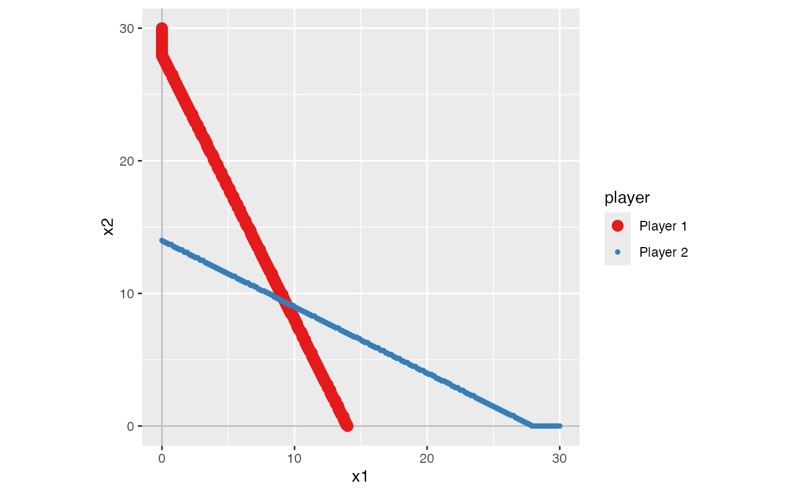
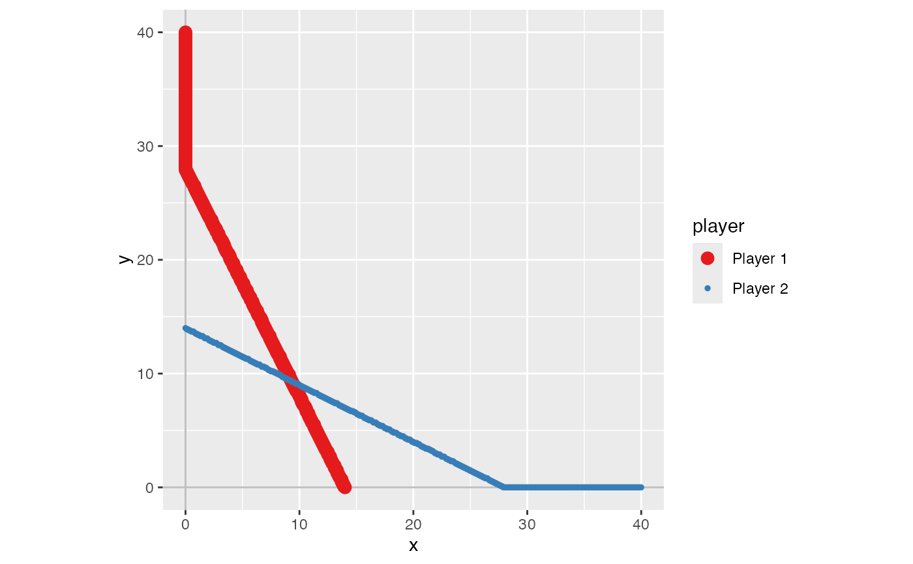

solve_nfg() finds Nash equilibria of a normal-form game.
solve_nfg(
game,
mixed = FALSE,
show_table = TRUE,
mark_br = TRUE,
cons1 = NULL,
cons2 = NULL,
cons_common = NULL,
precision = 1,
plot = TRUE,
mark_NE = FALSE,
quietly = FALSE,
color_palette = "Set1"
)A "normal_form" class object created by normal_form().
A logical value. If TRUE, mixed-strategy NE will be
searched. Default is FALSE.
A logical value. If TRUE, the payoff matrix of the
game will be displayed. Default is TRUE.
A logical value. If TRUE, the best response to each of
the opponent's strategy is marked. Default is TRUE.
A named list of parameters contained in game$payoff$p1
that should be treated as constants, if any.
A named list of parameters contained in game$payoff$p2
that should be treated as constants, if any.
A named list of parameters contained in
game$payoff$p1 and game$payoff$p2 that should be treated as
constants, if any. If cons1 and cons2 are exactly same, you
can specify cons_common instead of specifying both cons1
and cons2.
A natural number specifying the precision of numerical approximation. The value n approximately means that the approximation is correct up to the Nth decimal place. The default value is 1.
A logical value to determine whether the figure of the best
response correspondences will be displayed. Default is TRUE.
A logical value to control if the NE (if any) will be marked
in the best response plot, which will be displayed (only displayed when
plot = TRUE). Default is FALSE.
A logical value that determines whether the equilibrium will
be kept in the returned list without being printed on screen. Default is
FALSE.
A color palette to be used. Default is "Set1".
A list containing Nash equilibria (if any), the payoff matrix of the game (if available), and the plot of best response correspondence (if available).
This function finds Nash equilibria of a normal-form game by
solve_nfg_matrix, solve_nfg_char, or
solve_nfg_fcn depending on type of a "normal_form"
object defined by normal_form.
game1 <- normal_form(
s1 = c("T", "B"), s2 = c("L", "R"),
p1 = c(4, 2, 3, 1), p2 = c(4, 3, 2, 1))
s1 <- solve_nfg(game1, show_table = FALSE)
#> Pure-strategy NE: [T, L]
game2 <- normal_form(
p1 = "-x1^2 + (28 - x2) * x1",
p2 = "-x2^2 + (28 - x1) * x2",
par1_lim = c(0, 30),
par2_lim = c(0, 30),
pars = c("x1", "x2"))
s2 <- solve_nfg(game2)
#> approximated NE: (9.3, 9.3)
#> The obtained NE might be only a part of the solutions.
#> Please examine br_plot (best response plot) carefully.

fx <- function(x, y) -x^2 + (28 - y) * x
fy <- function(x, y) -y^2 + (28 - x) * y
game3 <- normal_form(
p1 = fx,
p2 = fy,
pars = c("x", "y"),
par1_lim = c(0, 40),
par2_lim = c(0, 40))
s3 <- solve_nfg(game3)
#> approximated NE: (9.3, 9.3)
#> The obtained NE might be only a part of the solutions.
#> Please examine br_plot (best response plot) carefully.
